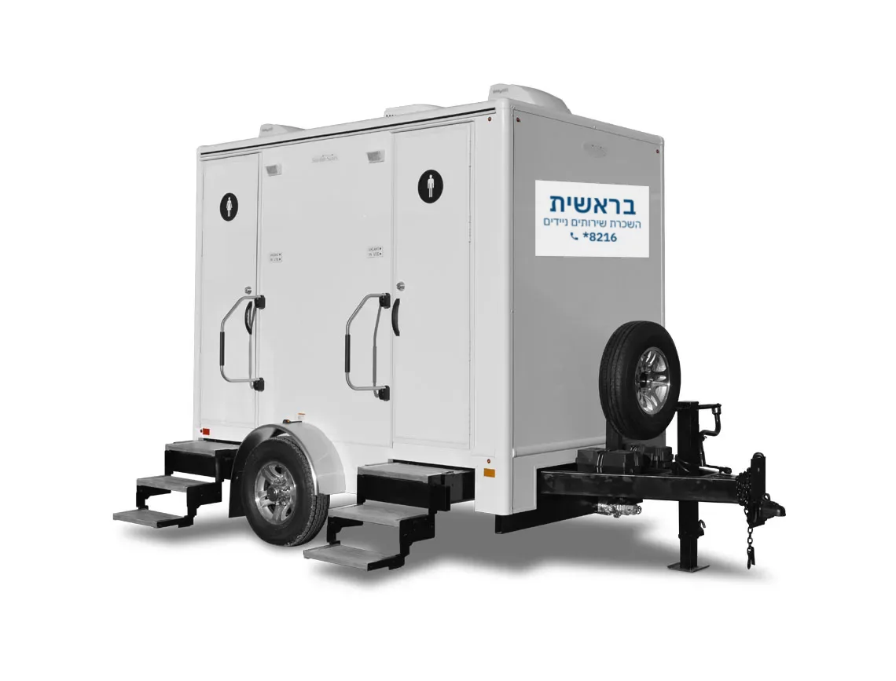

השכרת קרוואן שירותים מפואר
שירותים ניידים סטנדרטיים כבר אינם הסטנדרט המקובל, ומפיקי אירועים מעדיפים לשכור שירותים ניידים מפוארים. קרון שירותים מפואר משלב שימושיות עם נוחות וסטייל, ומתאים לחתונות בטבע, לאירועי חברה, לפסטיבלי מוזיקה ולמתחמי VIP.
חוויה של שירותים במבנה קבוע, גם בשטח
קרונות השירותים המפוארים כוללים חללי פנים מרווחים ואביזרי פרימיום, מיזוג אוויר, תאורת לד ומערכות שמע. התאים ממוזגים ומרווחים, עם ברזים אלקטרוניים, סבונים ריחניים ומפיצי ריח.
הקרונות מציעים פרטיות מלאה למשתמשים, עם תאים נפרדים לגברים ולנשים, ומצוידים במערכות ניקיון וחיטוי שמונעות ריחות לא נעימים. ניתן להתאים אותם מבחינת כמות התאים והאבזור, בהתאם לצרכי האירוע.

בוחרים לפי מספר האורחים, משך האירוע והצורך בנגישות
תא VIP סולארי ממוזג
למי שמעדיפים תא יחיד ברמה גבוהה. כל האביזרים פועלים באופן עצמאי באמצעות מערכת סולארית, למעט המזגן שדורש חיבור לחשמל 220V.
קרון 2 תאים
קומפקטי יחסית, נהוג לחלק לתא נשים ותא גברים. מתאים לאירועים של עד 200 אורחים.
קרון 4 תאים נגיש
4 תאים בודדים וכניסה ייעודית לנכים עם מעלון מתקדם. כולל מיזוג אוויר, מערכות שמע, תאורת לד פנימית וחיצונית, ברזים אלקטרוניים וסבונים מפיצי ריח. מתאים לאירועים של עד 350 אורחים.
קרון 6 תאים
הקרון הגדול ביותר. אגף נשים ואגף גברים, ולכל אגף לובי כניסה מרווח למניעת עומס. מתאים לאירועים של עד 400 אורחים.
ככל שמספר האורחים עולה, גדל הצורך בקרון גדול יותר כדי למנוע תורים ועומס. חשבו כמה תאים צריך · שירותים נגישים
הדגמים: שחר, תמר ו-VIP
- דגם שחר (סטנדרטי): מתקן ענק לנייר טואלט, מראה על דופן הדלת, מדף שירות, נעילה פנימית ומיכל איסוף פסולת.
- דגם תמר (משודרג): הדחת מים ממחזרת, כיסוי בתחתית האסלה, מתקן נייר טואלט לשלושה גלילים, מיכל איסוף פסולת של 250 ליטרים ורשתות צל היקפיות.
- תא VIP סולארי ממוזג: מזגן, כיור עם מים זורמים, סבון ומפיצי ריח.
בתוך קרון שירותים מפואר: אסלת חרסינה, כיור מעוצב, מראה גדולה ומגבות נייר.
מה צריך בשטח כדי להפעיל קרון
ניתן להציב קרונות שירותים מפוארים בכל מקום, ללא חיבור לתשתיות ביוב ומים קבועות. עם זאת, כדי להפעיל את כלל המערכות בקרון, כמו המזגן והמערכות האלקטרוניות, נדרש חיבור לחשמל 220V פאזה נפרדת.
דגמים מפוארים דורשים לרוב גם צינור מים וגישה נוחה למשאית, לצורך תפעול המערכות המשודרגות כגון מיזוג אוויר וכיורים עם מים זורמים.
חשמל
220V פאזה נפרדת.
מים
לרוב צינור מים, להפעלת כיורים עם מים זורמים.
גישה
גישה נוחה למשאית.
נקי לאורך כל האירוע
מערכות טיפול כימיות מתקדמות מנטרלות ריחות וחיידקים, ולצדן ניקוי ותחזוקה בתדירות גבוהה, כדי שסביבת השירותים תישמר נקייה לאורך כל האירוע. בתום האירוע מתבצע טיפול מבוקר בפסולת, והשטח נשאר נקי.
אנחנו מעניקים שירות מלא, מרגע ההזמנה ועד סוף האירוע, הכולל איש שירות צמוד שמבטיח שהשירותים יישארו נקיים ונעימים לכל אורך השימוש. את קרון 4 התאים ניתן לשכור גם לתקופות ארוכות, כולל שאיבות ותחזוקה.

שאלות נפוצות על קרונות מפוארים
מה ההבדל בין תא סטנדרטי לקרון מפואר?
ההבדל טמון בעיקר ברמת האירוח והאבזור. תא סטנדרטי הוא פתרון יעיל ובסיסי, שמתאים לכל שטח ללא הכנה מיוחדת. קרון מפואר מציע מערכת מיזוג אוויר, מוזיקת רקע, תאורת לד, ברזים אלקטרוניים וחלוקה לתאי נשים וגברים.
האם יש צורך בתשתיות מיוחדות?
אין צורך בחיבור לתשתיות ביוב ומים קבועות. עם זאת, השימוש במזגן ובמערכות האלקטרוניות דורש חיבור לחשמל 220V פאזה נפרדת.
האם שירותים יוקרתיים נגישים לנכים?
כן. בקרון 4 התאים קיים תא נגיש ייעודי המצויד במעלון חשמלי. התא רחב מהרגיל וכולל מעקות אחיזה ומרחב תנועה מותאם.
האם ניתן להציב קרון מפואר בכל מקום בארץ?
כן. שירותים מפוארים מתאימים להשכרה לאירועים בצפון, במרכז ובדרום הארץ, ללא הגבלת מיקום.
להצעת מחיר על קרון שירותים מפואר חייגו 8216*, או השאירו פרטים בעמוד צור קשר. ייעוץ והצעת מחיר ללא התחייבות.